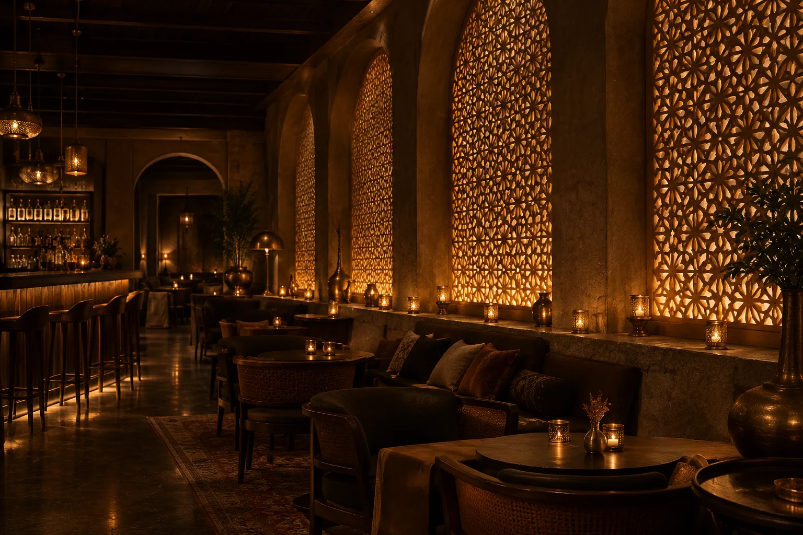
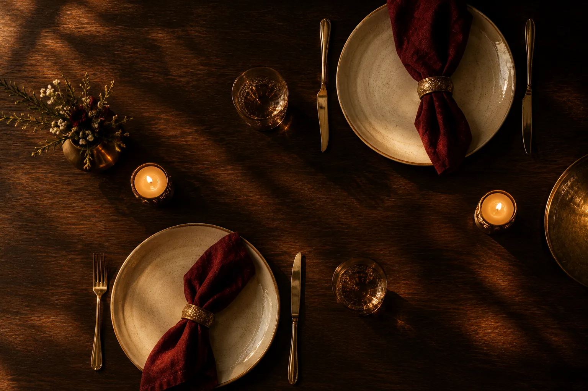

About AAVARAN
Where India's KitchensMeet the Table
AAVARAN — āvaran, the Sanskrit word for a covering or veil — is a concept for a restaurant that lifts the veil on regional Indian cooking, one considered plate at a time.

Our Philosophy
Rooted, never fixedTradition as a starting point.
We begin with the techniques that have shaped Indian kitchens for centuries — slow dum, tandoor fire, tempered spices — and ask what they can become on a modern table. The result is food that feels familiar in flavour and new in composition.
Roots
Every dish is anchored in a real regional tradition, named honestly and cooked with respect for where it comes from.
Craft
Spices are toasted and ground in small batches, stocks simmer for hours, and breads are rolled to order.
Welcome
Hospitality here is attentive but unhurried: a room that lets conversation, and the food, take their time.
Regional Kitchens
Many Indias, One Table.
- Punjab
Charcoal tandoor cooking and slow-simmered black dal, finished with white butter.
- Hyderabad
Dum biryani sealed under dough, where saffron, fried onion and marinated meat steam together.
- The Konkan Coast
Tamarind, kokum, coconut and ghee-roasted chilli, often paired with seafood.
- Bengal
Mustard oil, poppy seed and a gentle heat, from river-fish curries to milk-based sweets.
- Awadh
Unhurried, aromatic cooking from Lucknow: soft kebabs, mace and rose.
Every plate is a letter home.— The AAVARAN concept note

The Table
Hospitality, quietlyMade for long, good evenings.
From a quiet dinner for two to a family celebration, the room is designed to feel warm rather than formal: low light, natural materials and service that anticipates rather than interrupts.
Explore the MenuAAVARAN is a fictional portfolio concept. This story is illustrative and describes no real restaurant, founder or history.